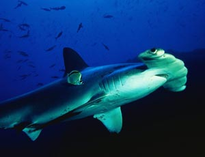
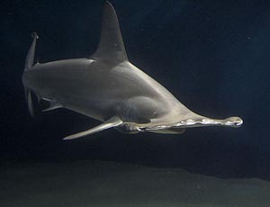

Der große Hammerhai (Great hammerhead shark) hat eine auffallend große, aufrechte erste Rückenflosse. Dem Hammer fehlen eigentliche Einbuchtungen und seine Kontur ist nahezu gerade verlaufend. Die Bauchflossen haben tiefe Einbuchtungen. Er hat einen bronzefarbenen bis grau-braunen Rücken und einen weißlichen Bauch. In Australien ist er an den Küsten des Northern Territorys, Queenslands und New South Wales anzutreffen. Diese Art kann sich sowohl im flachen als auch im tieferen Wasser aufhalten (bis ca. 80m). Zur Nahrung des Hammerhais gehören Knochenfische und Stechrochen, welche mit dem Hammer (Sinnesorgane) im Sand geortet werden können. Daneben fressen sie auch andere Haiarten (z.B. Glatthaie). Er erreicht eine Länge bis ca. 610cm, doch sind die meisten Tiere unter 400cm lang, wobei die vergleichsweise wenigen, sehr großen Tiere, meist Weibchen sind für den Menschen gefährlich.
 15.11.2011